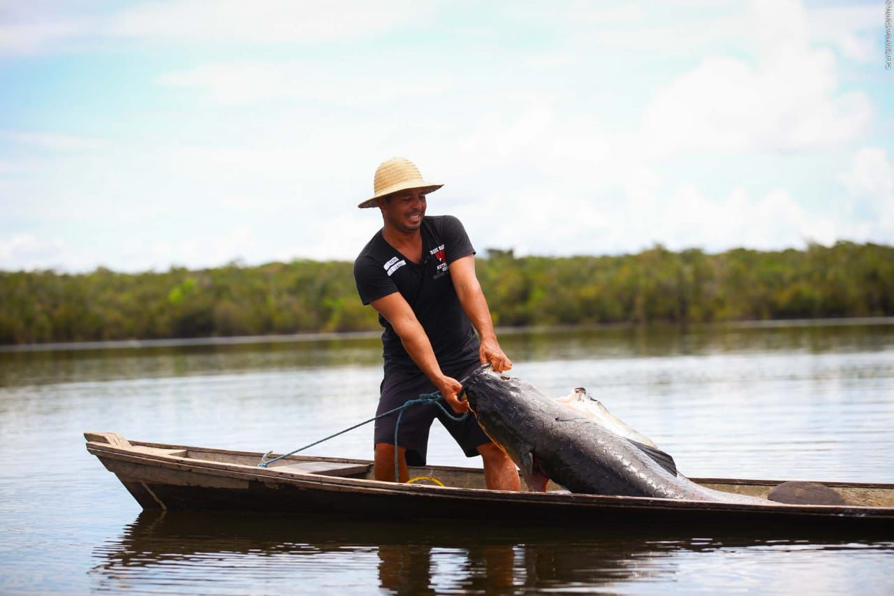
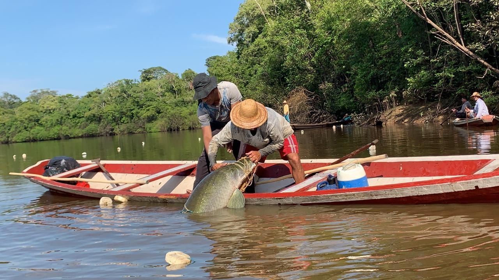
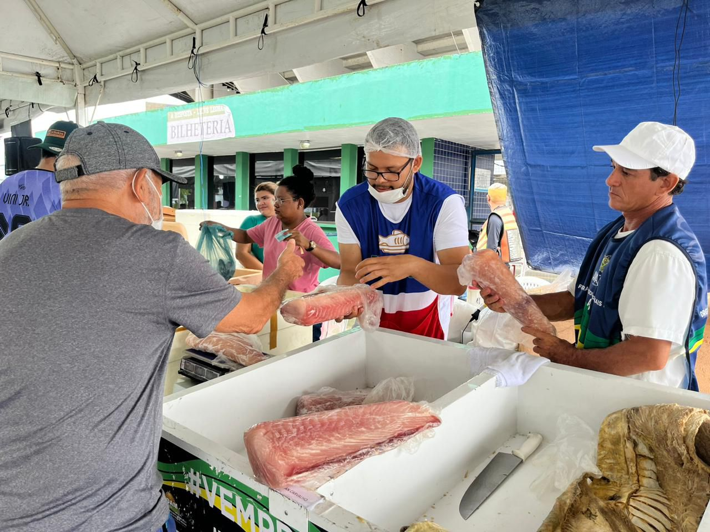

Ouriço-do-mar. (Imagem: Portal de Zoologia)
Impactos Ambientais
A pesca ilegal representa uma ameaça significativa para os ecossistemas marinhos do Brasil, contribuindo diretamente para o declínio das populações de peixes e outros organismos marinhos. Espécies são capturadas de maneira indiscriminada e muitas vezes antes de atingirem a maturidade reprodutiva, o que compromete severamente o ciclo natural de reprodução e pode levar ao esgotamento de estoques pesqueiros inteiros. Além disso, métodos predatórios como redes de arrasto de fundo causam danos irreparáveis a habitats sensíveis, como recifes de coral e leitos de algas, essenciais para a biodiversidade marinha e para a proteção das costas contra a erosão.
Impactos Socioeconômicos
As comunidades costeiras que dependem da pesca para sustento enfrentam consequências devastadoras devido à pesca ilegal. A redução dos estoques pesqueiros devido à sobrepesca ilegal diminui as capturas legais, afetando diretamente a segurança alimentar e a renda dessas comunidades.

Pescador. Foto: Reprodução/ADS
Programas
O Governo do Amazonas tem investido nas subvenções econômicas e incentiva as atividades pesqueiras de forma legalizada, para isso desenvolveu programas em concordância ao desenvolvimento sustentável no Amazonas e em acordo com os objetivos de Desenvolvimento Sustentável (ODS), preconizados pela Organização das Nações Unidas (ONU), para promover o crescimento sustentável global.
Subvenção do Pirarucu
O Programa de Subvenção Econômica dos Pescadores do Pirarucu Manejado foi idealizado pelo Governo do Estado, por meio da ADS, com o objetivo de incentivar a atividade de forma sustentável, dada a importância econômica, social, ambiental e cultural da cadeia produtiva da espécie. O programa é previsto pela Lei nº 2.611, de 4 de julho de 2000, e regulamentado pelo decreto n ° 41.829, de 21 de janeiro de 2020, com a finalidade de conceder a subvenção econômica aos pescadores em regime de manejo sustentável do Pirarucu (Arapaima Gigas).

Subvenção do Pirarucu. Foto: Reyzon Almeida/Sepror
Peixe no Prato
O peixe no prato solidário beneficia a população, incentivando o consumo de pescado com origem e procedência, tendo boas práticas de manejo na piscicultura e controle sanitário, oferecendo à população um peixe saudável e com valor nutricional completo.

Programa peixe no prato. Foto: Ana Maria Reis
Feiras de Produtos Regionais
Os pescados, que são comercializados nas Feiras de Produtos Regionais da ADS, são oriundos de manejadores e piscicultores do estado que executam boas práticas de manejo e que são legalmente autorizados pelos órgãos competentes.